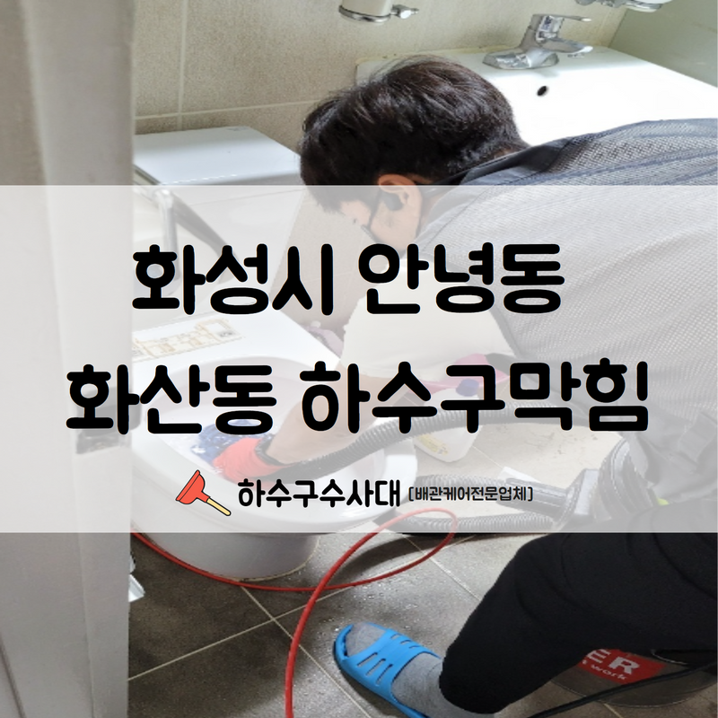
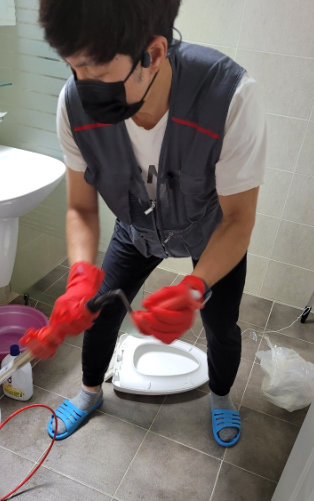
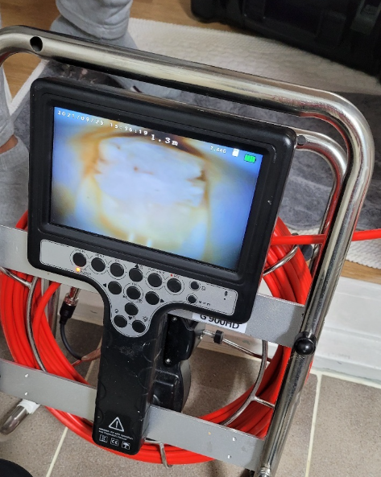
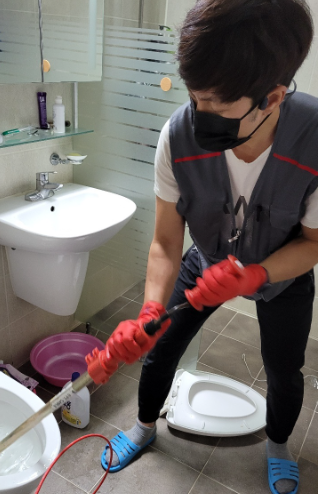
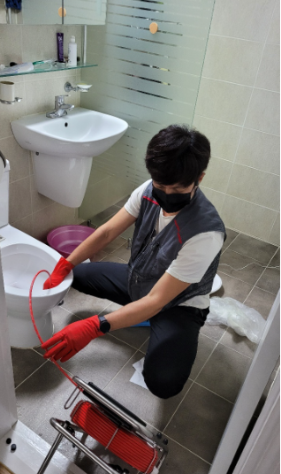
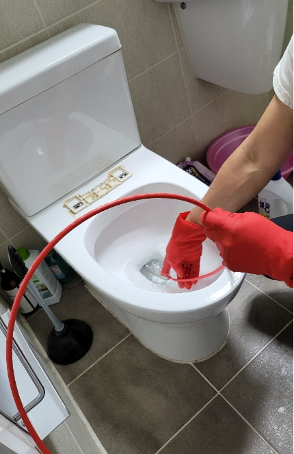
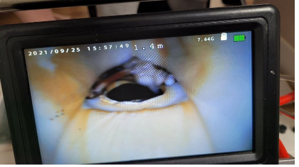

🏠 화성시 안녕동 화산동 하수구막힘 고압세척의 진행으로 손상 없이 시공 완료하였습니다!
화성 하수구막힘 전문 시공 후기

📋 작업 개요
- 위치: 화성
- 서비스 유형: 하수구막힘, 배관막힘, 맨홀막힘, 역류해결, 고압세척
- 작업 일시: 2022. 7. 20. 12:24
- 업체명: 하수구수사대 (010-5615-2118)
🔍 문제 상황
안녕하세요.하수구수사대 입니다.반갑습니다.
매일매일 쉼 없이 돌아가야 하는 공장과 같은 곳에서 하수구막힘이 발생하게 된다면 그 피해는 상상하기 어려울 정도라고 할 수 있습니다. 그리고 상가 건물이나 사무실에서도 이러한 하수구막힘이 발생하게 되면 역시 당장의 업무나 영업에 지장이 가기 때문에 신속한 현장 방문과 해결이 필요한 것입니다.
화성시 안녕동 화산동 하수구 막힘으로 의뢰를 해주셨습니다.
근본 원인 제거부터 해서 깔끔하게 막힘을 없애드렸습니다. 이번에 방문한 화성시 안녕동 화산동 하수구막힘 공장은 3교대로 돌아가는 상황에 쉼 없이 돌아가는 곳이었는데요. 내부 화장실에서 막힘과 역류가 동시에 발생하고 있는 상황이었습니다.

🔎 원인 분석
💡 전문가 진단: 화성시 안녕동 화산동 하수구 막힘으로 의뢰를 해주셨습니다.
이러한 이유로 인해서 공장 작업에도 영향을 많이 받고 있는 상황이었기 때문에 시급한 해결이 필요한 상황이었습니다. 특히 직원들이 많이 사용을 하는 화장실과 주방 등등의 곳곳에서 피해가 발생하고 있었기 때문에 신속하게 해결하기 위해서 현장을 방문하게 되었습니다.
현장에 나가기 전에는 고객과의 충분한 일정 조율을 진행하고 방문을 하는데요.
무엇보다도 빠르게 원인 점검과 해결이 중요한 것인 만큼 일정에 최대한 맞춰서 신속하게 방문할 수 있는 시간대로 방문을 도와드리도록 하였습니다. 상담을 통해 꼼꼼하게 일정을 맞추어 드리니 미리 원하시는 시공시간이나 날짜를 말씀 주시면 조금 더 수월합니다.
화성시 안녕동 화산동 하수구막힘 현장에 도착을 해서 가장 우선적으로 진행을 하는 것은 바로 내부 상황을 보기 위한 배관 내시경 작업입니다. 내시경 카메라를 이용해서 배수관 내부의 상태를 살펴보아야 정확히 어떠한 원인으로 인해서 하수구막힘이 발생하였는지를 확인할 수 있는 것입니다.
정확한 원인 파악이 중요합니다.

🔧 작업 과정
단순히 감으로만 원인을 파악하고 해결을 하기에는 어려움이 많을 수밖에 없기 때문에 정확하게 원인 해소가 되지 않을 수 있습니다. 그러므로 최대한 꼼꼼하게 원인부터 파악을 해서 작업을 진행하고 있습니다.
막힘 현상은 건물 내부 곳곳에서 동시다발적으로 하수구에 문제가 발생하고 있었는데요 그래서 메인 배관부터 살펴보게 되었습니다. 원인은 외부에 위치하고 있는 메인관에 이상이 생기면서 발생한 것입니다.
원인 파악 후 작업 진행을 하였습니다.
그러다 보니 모든 하수구를 통해서 물이 정상적으로 배수되지 못하고 역류가 발생하고 있음을 알 수 있었습니다. 맨홀 뚜껑을 열고 내시경 카메라를 연결해서 확인을 하였는데요 모든 시공이 마무리된 후에는 뒷정리까지 꼼꼼하게 해드리고 있기 때문에 안심하셔도 되십니다.
내시경을 통해서 살펴본 내부 상태는 생각보다도 심각한 상황이었는데요 오랜 시간 동안 한 번도 세척해 주지 않은 배관이어서 전체적으로 이물질의 양도 많았고 기름 슬러지 등도 많이 끼어있는 상황이었습니다.
이에 맞는 고압세척을 준비하였습니다.
보통 부피가 크고 단단한 이물질이 배수관 입구 쪽에 자리 잡고 있을 경우에는 스프링 기기 등을 이용해야 하지만 이번 현장의 경우는 배수관의 깊은 구간까지도 이미 이물질이 자리 잡고 있는 상황이었기 때문에 고압세척이 필수였습니다.
고압세척은 배관 내부에 손상을 입히지 않으면서 이물질을 제거할 수 있기 때문에 막힘이 발생한 경우에는 자주 사용하는 방법이기도 합니다. 고압세척에 대한 필요성을 모르시는 상태에서 방치해두었다가 일을 더 크게 될 수도 있기 때문에 빠른 해결을 위해서는 원인을 파악하고 그에 맞는 장비를 통해서 해결을 하는 것이 필요합니다.


✅ 작업 완료
배관 작업 후에 주변 정리까지 깔끔하게 마무리해 드렸습니다.
경기도 화성시 효행로 1060 10층 1004-A246호




⚠️ 하수구 배관 막힘 예방 및 관리 가이드
- ✅ 머리카락, 비닐, 물티슈 등 물에 분해되지 않는 이물질은 하수구 유입을 절대 금지해 주세요.
- ✅ 하수구 거름망을 씌우고 모여진 이물질은 주기적으로 쓰레기통에 바로 비워주셔야 합니다.
- ✅ 배관 노후가 심할 경우 이물질이 더 쉽게 걸리므로 주기적인 배관 세척(고압세척 등)을 권장합니다.
- ✅ 작업 후 1년 이내 재발 시 하수구수사대에서 무상 A/S 보증 서비스를 제공합니다.
💡 핵심 정리
- 확실한 장비 작업(내시경 점검 및 샤프트 스케일링)으로 원인을 뿌리 뽑습니다.
- 작업 후 1년 이내에 동일한 부위 재발 시 100% 무상 A/S 서비스를 보장합니다.
- 서울 · 경기 · 인천 전 지역에 24시간 언제든 긴급 출동할 수 있도록 항시 대기 중입니다.
❓ 자주 묻는 질문 (FAQ)
🚨 화성 하수구막힘 문제로 고민이신가요?
정확한 원인 진단과 확실한 시공으로 재발 없는 해결을 약속드립니다.
24시간 긴급 출동 | 서울 · 경기 · 인천 전지역 | 1년 내 재발 시 무상 A/S